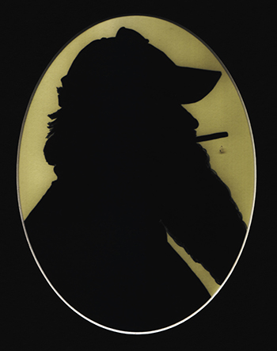
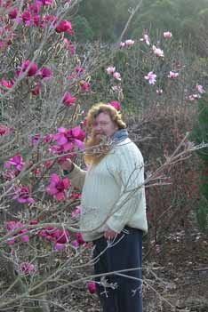

1960-2019

Peter
Murk, born in 1960 in Yallourn. His immigrant father
and
local mother moved to Melbourne in 1967. He began writing poetry and
short prose from childhood with a particular interest in
recording
stories collected from those he has met. He has been published
in
Overland
and other journals including essays on aesthetics for the
Victorian Contemporary Sculptors’ Association, travel pieces
and
reviews for the Temple Studios newsletter. He has presented specialist
programmes on radio about gardening and written gardening notes in
The Age.
He worked as a gardener from 1985, at first in Fitzroy Gardens in
Melbourne assisting an old Calabrian fellow in his work.
‘Peter, the plants will tell you what they
want’; and
so they do if you’re taught to look. He
next gardened in the
Dandenongs on 30 acres attached to the oldest nursery
in Australia, tending the State Magnolia Collection,
specialising
in Chinese flora and woodland plantings. Leaving the hills he
then
practised as a designer in Toorak and surrounding areas. From
natural surroundings to surroundings contrived to be natural.
At
present he is living in western Victoria, furthering his
knowledge
by embracing gum trees, taxonomically. Previously he has been known to
give the odd Wooly Butt a manly hug, but ‘it’s damned
hard
trying to explain the fluffy bark on your collar.’
Posing the Vast Spaces
is his first novel, published by Black Pepper. He is currently working
on his new novel, a botanical romance.
Back to top